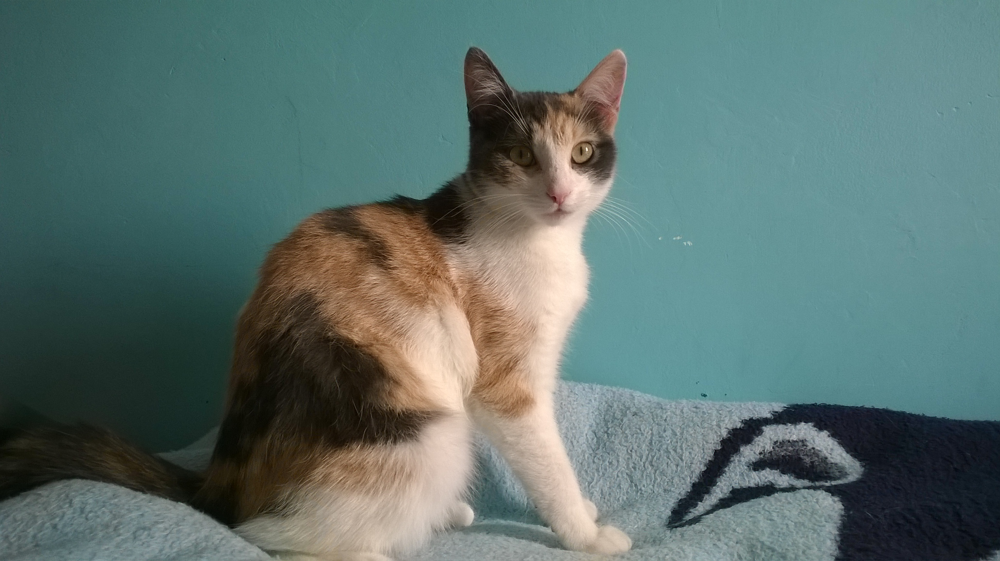
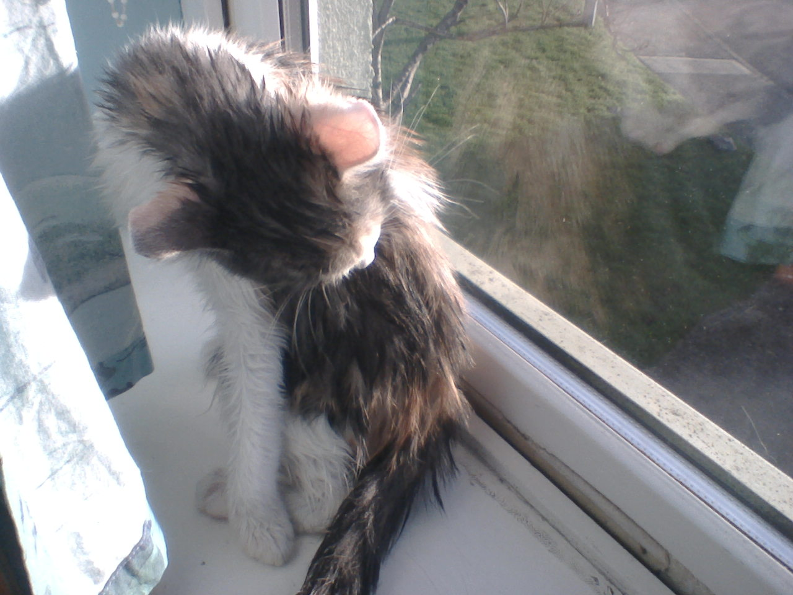
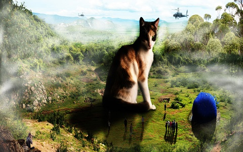

This is my cat Sally
Here are some facts about here!
- Her birthday is on the 16th of August 2014.
- She despises water (like most cats) and would spend hours grooming after a bath.
- Like most cats she's likes to chase anything that moves (a laser pointer for example) and would even cry if
"the red dot" would disappear.
- One of her favorite things to do involves wresling with my hands.
- She would often cuddle next to me in my room (usually when I was busy with projects).
- Sally only eats Salmon and Chicken flavoured canned food (and would refuse to eat anything else as a substitute).
- Most of her toy are toy mice and rolling balls (which she would chase endlessly).
- She also likes to sleep on the window sills (probably because the sun keep her warm).

